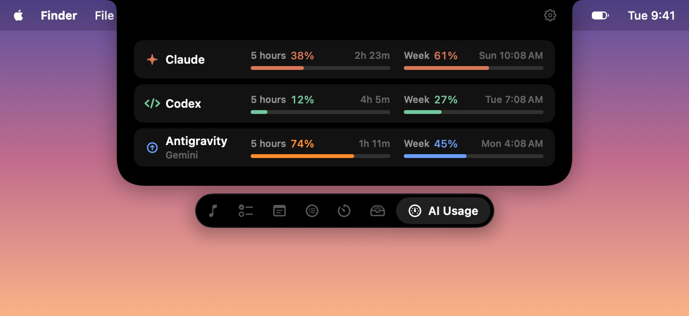
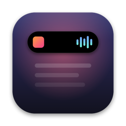

Shows your AI coding limits
The 5-hour and weekly windows of Claude Code, Codex and Antigravity, read from their own CLIs at no token cost.

Hover the notch and it opens into a player for any app or browser tab, a focus timer, Apple Reminders, notes and a file shelf. For macOS 15 and later.
MIT licence, no account, English and Arabic.
macOS keeps its media controls from other apps, so Nook reads them through a small helper. Spotify, Music and a web player in a browser tab show up the same way.
The 5-hour and weekly windows of Claude Code, Codex and Antigravity, read from their own CLIs at no token cost.

Scroll, swipe or drag the minute ruler, then start. A ring counts down in the closed notch.
The cask downloads the latest release, checks its SHA-256 and moves Nook to Applications. Nook then looks for updates once a day.
Nook is not notarized yet, so on the first launch open System Settings, Privacy & Security and click Open Anyway.
See every releaseSomething else, or a bug to report? Open an issue on GitHub and it gets an answer there.
Ask on GitHub
No. It is free and open source under the MIT licence, with no account and nothing to buy.
Any Mac on macOS 15 or later, Apple silicon or Intel. A Mac without a notch gets a pill in the menu bar.
Nook is not notarized yet. Open System Settings, Privacy & Security and click Open Anyway once.
On your Mac, in Application Support. Reminders stay in iCloud through Apple Reminders.
English and Arabic. It follows your system language, or you can pick one for Nook alone in System Settings.